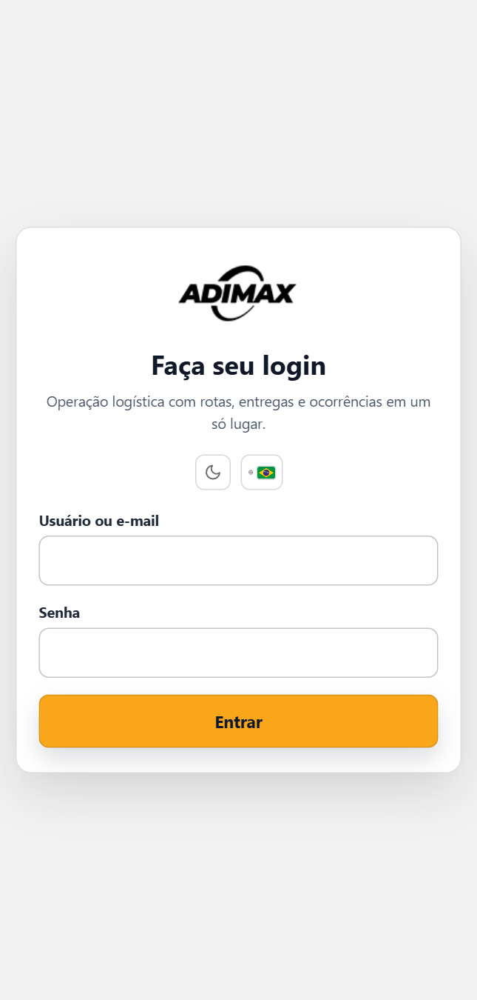
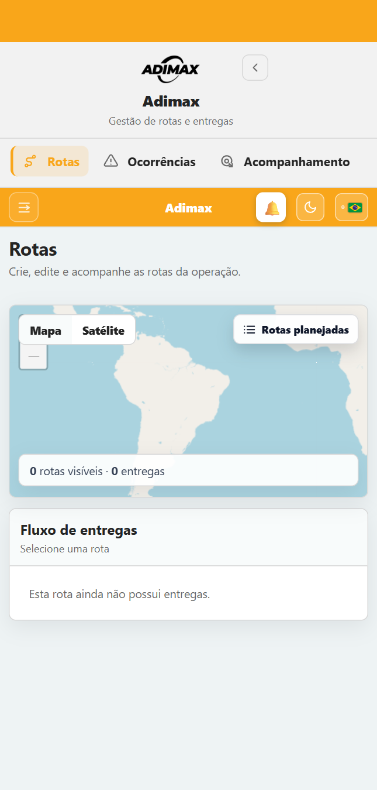
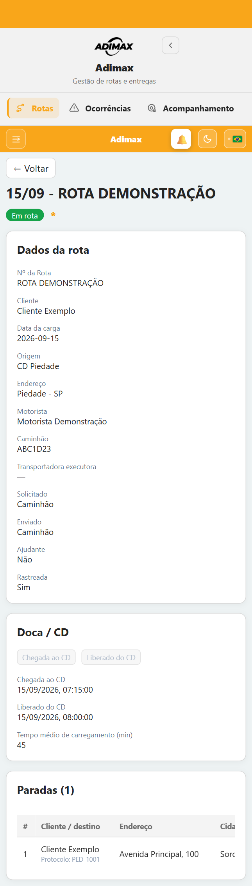
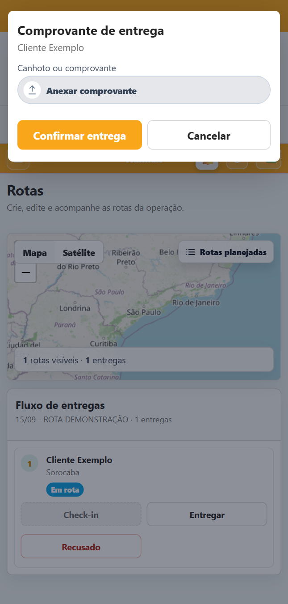
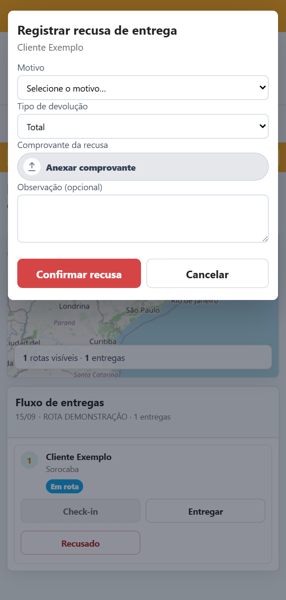
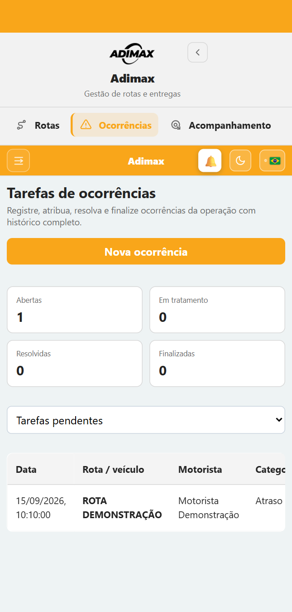
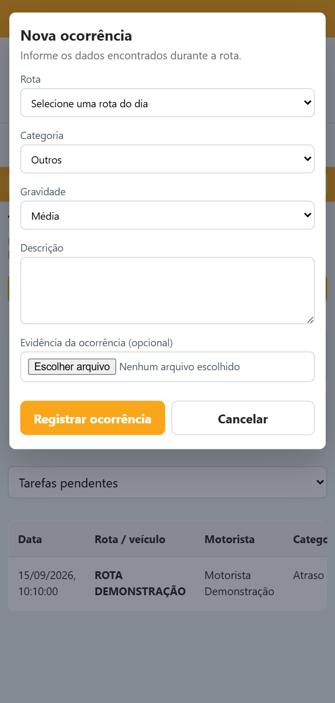

Tela de login, rotas e ocorrências
Versão do manual: 1.2 — 18/09/2026

A tela de login é a porta de entrada do aplicativo.
No primeiro acesso, o aplicativo pode solicitar a criação de uma nova senha. Digite a nova senha, confirme-a e salve. Depois disso, use essa senha nos próximos acessos.
| Item | Função |
|---|---|
| Usuário ou e-mail | identifica o motorista que está entrando |
| Senha | recebe a senha pessoal de acesso |
| Entrar | valida os dados e abre as rotas do motorista |
| Lua/sol | alterna entre tema claro e escuro |
| Bandeira | seleciona o idioma disponível |
Se o acesso não funcionar, confira se usuário e senha foram digitados corretamente. Para senha esquecida, bloqueada ou expirada, solicite a redefinição ao responsável pela operação.
Depois do login, o motorista é direcionado para Rotas. Essa tela mostra apenas as rotas atribuídas ao cadastro do motorista conectado.

Exemplo demonstrativo da tela de rotas, com dados fictícios.
Cada rota pode apresentar:
| Filtro | O que mostra |
|---|---|
| Abertas | rotas planejadas, liberadas ou em andamento |
| Pendências anteriores | rotas de dias anteriores que ainda precisam ser concluídas |
| Fechadas | rotas finalizadas ou canceladas |
| Todas | todas as rotas permitidas ao motorista |
Para trabalhar em uma rota, toque nela e selecione Abrir.
Ao abrir a rota, confira código e data, origem, endereço do CD, motorista, veículo, situação, sequência das paradas, cliente, endereço, cidade, pedido e horário previsto.

A tela de detalhe reúne dados da carga, etapas do CD e paradas.
Antes de iniciar, confirme se a rota e o veículo estão corretos. Se houver divergência, comunique a operação antes de registrar as etapas.
O botão Liberado do CD também registra a saída do veículo e altera a rota para Em rota. Se um botão estiver desabilitado, a etapa anterior pode não ter sido concluída ou a rota pode já estar encerrada.
As paradas devem ser atendidas na ordem apresentada.
Depois da confirmação, a parada muda para Entregue e recebe o horário da conclusão.
Ao tocar em Entregar, o aplicativo permite abrir a câmera, escolher uma imagem armazenada no aparelho ou escolher um arquivo PDF.

Enquadre o documento inteiro, evite sombra e reflexo, confirme se assinatura, carimbo, data e número estão legíveis e aguarde o envio terminar antes de sair da tela.

Ao retornar ao CD, abra novamente a parada e toque em Devolução entregue no CD. Anexe o comprovante de recebimento da mercadoria pelo armazém e salve.
| Situação | Significado |
|---|---|
| Pendente | atendimento ainda não iniciado |
| Em rota | check-in ou deslocamento da parada em andamento |
| Entregue | entrega concluída com comprovante |
| Recusado/Falha | entrega não concluída e motivo registrado |
| Devolvido | mercadoria retornada total ou parcialmente |
Após o fechamento, os botões de check-in, entrega e recusa ficam bloqueados. Para corrigir uma rota encerrada, entre em contato com a operação.
A tela Ocorrências serve para comunicar problemas encontrados durante a operação e acompanhar o tratamento realizado pela equipe.

Exemplo demonstrativo da lista, com rota e motorista fictícios.
A tela apresenta quantidade de ocorrências abertas, em tratamento, resolvidas e finalizadas, além de rota, categoria, gravidade, descrição, situação e responsável.
Os filtros permitem visualizar tarefas pendentes, todas as ocorrências ou apenas uma situação específica.

| Gravidade | Quando utilizar |
|---|---|
| Baixa | situação sem impacto imediato na entrega |
| Média | problema que precisa ser acompanhado pela operação |
| Alta | problema com impacto importante na rota ou entrega |
| Crítica | situação urgente, de segurança ou que interrompe a operação |
Em caso de risco à integridade física, pare em local seguro e acione imediatamente os canais de emergência e a operação. O registro no aplicativo não substitui uma ligação urgente.
Informe o que aconteceu, local e horário, cliente ou parada envolvida, impacto na entrega e a ação que já foi tomada.
Exemplo: “Cliente fechado às 14:35. Portaria sem resposta. Operação avisada e foto da fachada anexada.”
Enquanto a ocorrência estiver Aberta, o motorista pode tocar em Editar para corrigir os dados ou em Excluir para remover um registro feito por engano. Depois que a equipe assumir o tratamento, as alterações passam a ser controladas pela operação.
As situações seguem normalmente:
Aberta → Em tratamento → Resolvida → Finalizada.
A ocorrência também pode ser cancelada quando registrada por engano ou quando deixar de ser aplicável. O histórico pode mostrar data, etapa, responsável, solução e observações da equipe.
O aplicativo permite continuar a rota quando o sinal de internet desaparecer. Um aviso no alto da tela mostra Trabalhando sem internet e a quantidade de ações que aguardam sincronização.
Podem ficar guardados no aparelho:
As ações são enviadas na ordem em que foram feitas e possuem proteção contra duplicidade. Fechar o aplicativo ou reiniciar o aparelho não apaga a fila. Porém, sair da conta, limpar os dados ou desinstalar o aplicativo pode impedir a recuperação local; evite essas ações até terminar a sincronização.
Se o aviso indicar falha, toque nele para tentar novamente. Persistindo o problema, informe à operação o código da rota, a parada e a ação pendente.
Abrir aplicativo → informar usuário → informar senha → Entrar.
Abrir rota → Chegada ao CD → Liberado do CD → Check-in → Entregar ou Recusado → anexar comprovantes → Fechar rota.
Ocorrências → Nova ocorrência → selecionar rota → categoria → gravidade → descrição/evidência → Registrar ocorrência.